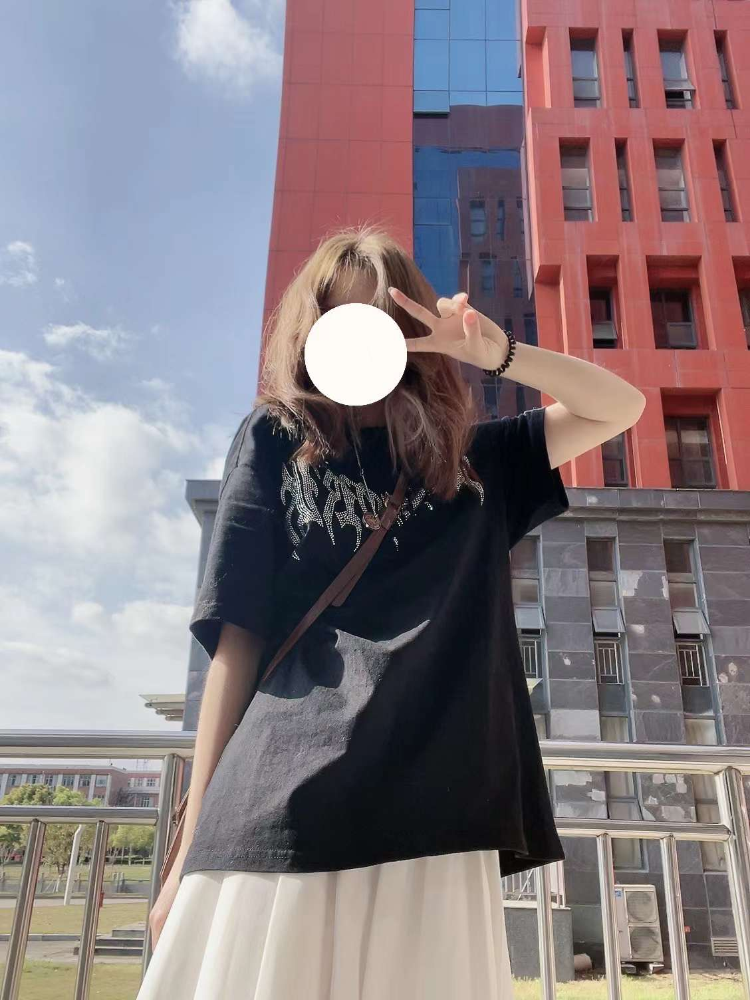

关于我
个人简介
我是一个乐观向上拥有梦想的人，性格活泼开朗，稳重成熟的外表下，充溢着内心的细心踏实,在大学不断成熟和锻炼的基础上,我更加独立活泼乐观的性情也促使我进取地参加各种有意义的活动，吸收每个值得个人成长的优点而去弥补不足:读书和闲暇时，却养成了好的行为习惯，旨在处处提高自我的素质。
既然是学校，就必定要有学生的样貌，对我的专业从来都是认真对待,熟练掌握专业知识，所以备写教案从不马虎，上台演讲，会议上发表言论频繁有条理，这已经成为一种习惯。但也会有多处不擅长的地方，遭到难题,也养成了多问多想多查阅的习惯，也所以培养了更广泛的亲和力,耐心和合作本事等。针对导师分配的任务，也大多采取小组合作,所以需要个人和其他组员达成意见-致，并需要认真完成每个人应完成的作业，结果个人和组的评比成绩才会优秀，这更是一个锻炼的机会，把握每个机会为工作及其其他个人发展的星点奠定基础都很有必要。
我是一个虚心理解前辈指导，理解,上级批评的人，有错会改更是难得的品质。利用业余时间兼职期间，让我懂得了人要勤奋，要上进，有耐心，懂得从小做起，做好每项工作，个人的专业知识及拓展知识要丰富，这样做起事来才会得心应手。